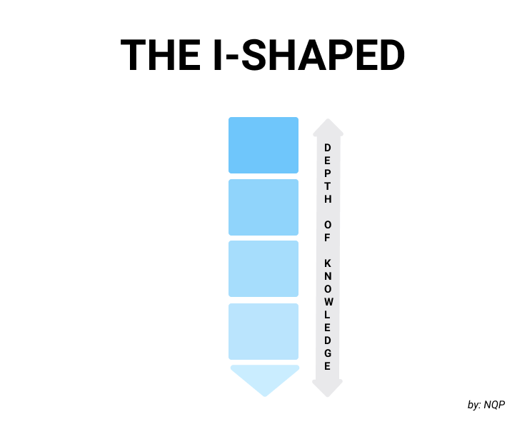

#lifestyle #travel #volunteer #knowledgesharing
Tại sao chúng ta nên trở thành chuyên gia trong nhiều hơn một lĩnh vực?
Sưu tầm: Mô hình con người nhiều chữ T của thời đại mới.
24/06/2021

Có lẽ bạn cũng như tôi, sẽ có thắc mắc khi đứng trước một biển kiến thức như ngày nay, cách nào
là tốt nhất để chúng ta phát triển được sự nghiệp, có kiến thức chuyên sâu phù hợp. Bài viết
này, tôi chia sẻ nhừng điều mà tôi được nghe từ những người khác, những người có kinh nghiệm lâu
năm và thành công, chứ không phải là ý của riêng tôi. Tôi đã áp dụng và thấy có hiệu quả, và tôi
nghĩ có thể nó cũng giúp ích được cho bạn nữa.
Mô hình kiến thức của một người xin được phép chia thành ba loại, chữ I, chữ T và nhiều chữ T. Người chữ (I) chỉ chuyên sâu về một thứ, giống như chữ I, chỉ đi sâu xuống theo một đường. Họ không biết về các lĩnh vực khác cũng như không biết về các kiến thứ tổng quan. Một ví dụ điển hình là các học sinh mọt sách hay nhiều nhà nghiên cứu. Họ quá mải mê đào sâu lĩnh vực của mình, thiếu hụt kiến thức xã hội. Họ sẽ rất khó phát triển sự nghiệp khi không có các hiểu biết chung, hay nói cách khác là không biết mình đang ở đâu trong nhu cầu của xã hội.
Kinh nghiệm của tôi nói với tôi rằng bạn càng cố gắng tìm kiếm một giấc mơ / niềm đam mê, bạn sẽ càng không tìm thấy nó. Có thể bạn đã tự nhủ rằng có một ước mơ và nỗ lực để hiện thực hóa nó là điều rất quan trọng nhưng điều đó không phải lúc nào cũng đúng. Xã hội kêu bạn làm điều này, có lẽ đó không phải là tiếng nói bên trong của bạn. Nếu bạn phải thay đổi con đường của mình, cách tiếp cận này cũng cần phải được thay đổi.
Người chữ (T) là người chữ (I), nhưng có thêm kiến thức tổng quan căn bản, thể hiện bởi dấu gạch ngang trên đầu. Hẳn nhiên, người chữ T sẽ khắc phuc được nhược điểm của người chữ I, họ biết mình ở đâu trong xã hội. Họ phát triển kiến thức chuyên sâu và có thể sẽ thành công. Tuy vậy, những người này vẫn có những nhược điểm. Thứ nhất, giờ đây sự giao thoa giữa các ngành khá mạnh mẽ, chỉ biết về một vấn đề nhỏ sẽ là một bất lợi. Thứ hai, khi họ gặp trở ngại trong việc phát triển chiều sâu chữ T của mình, gặp vật cản, họ sẽ thất bại vì không có sự dự phòng và không có những sự lựa chọn khác.
Để khắc phục nhược điểm của người chữ (T), con người, nhất là người năng động trong thời đại mới, nên theo mô hình nhiều chữ T (TTTT). Chúng ta nên có kiến thức tổng quan để có cái nhìn tổng quát, đồng thời phát triển sâu nhiều hơn một lĩnh vực. Ví dụ như các giáo sư đại học, ngoài nghiên cứu chuyên môn, thông thường đều có tài năng riêng về các lĩnh vực khác như lịch sử, hội họa, văn học. Ta coi như một người có hiểu biết sâu về một lĩnh vực nào đó khi người đó hoàn thành nghiên cứu tiến sĩ. Thời gian trung bình để làm tiến sĩ là 5 năm, như vậy trong quãng đời làm việc của mình, khoảng 30 năm, một người có thể là chuyên gia trong tối đa 6 lĩnh vực khác nhau. Còn tại cùng một thời điểm, chúng ta nên phát triển 3 lĩnh vực song song với nhau. Độ chuyên sâu, hay độ dài của các chữ T, cho mỗi lĩnh vực không nhất thiết phải ngang bằng với nhau.
Có rất nhiều người thành công ủng hộ quan điểm này. Giáo sư Lee Doo Yong thuộc viện KAIST (Hàn Quốc) chia sẻ rằng rất nhiều người mà ông gặp gỡ có nhiều hơn một tài năng. Bản thân ông cũng vừa là một nhà nghiên cứu, vừa là một nhà sử học. Hay như nhà văn Nguyễn Hiến Lê, trong nhiều tác phẩm của ông, từ 60 năm trước đã khuyên người đọc có những đam mê khác ngoài công việc, để khi có gặp khó khăn, nản chí trong công việc thì có thể lẩn mình vào những đam mê đó.
Hãy trở thành người nhiều chữ T. Có kiến thức tổng quan và chuyên sâu về nhiều hơn là một lĩnh vực. Chúng ta sẽ tận dụng được sự giao thoa giữa các lĩnh vực để đạt được nhiều thành công. Một lợi thế nữa là khi gặp khó khăn trong lĩnh vực này, ta có thể đầu tư sang các lĩnh vực còn lại. Tôi cũng đang cố gắng phát triển bản thân theo mô hình này. Ba lĩnh vực mà tôi đang phát triển là nghiên cứu đồ hoạ máy tính, tìm hiểu về kĩ năng mềm và lịch sử, và viết lách.
Đọc thêm: T-shaped Skills – Ma trận năng lực của bản thân, bạn có chưa?